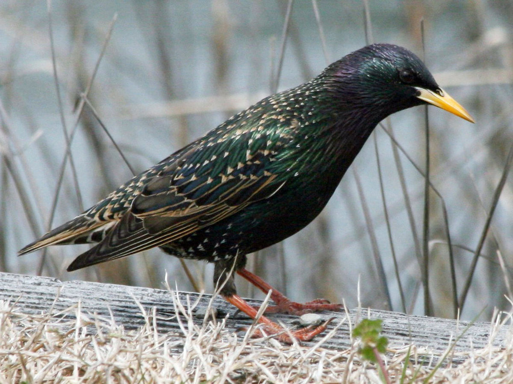

Zamieszkuje Europę i Azję. Można go spotkać nawet w Japonii, Turcji oraz Iranie.
Gatunek częściowo osiadły, zimą nielicznie migruje na południe w miejsca gdzie łatwo dostępne jest pożywienie.
Nie zamieszkuje za to rejonów śródziemnomorskich.
W Polsce nieliczny ptak lęgowy, niegdyś występował głównie w górach, gdzie odbywa lęgi.
W innych rejonach można było go spotkać stadnie zimą. Jest to gatunek ptaka, który trudno zaobserwować podczas lęgu, staje się wtedy bowiem bardzo skryty.
Szpak

Szpak zwyczajny
Szpak zwyczajny (Sturnus vulgaris) jest pospolitym ptakiem rozmiarami zbliżonymi do kosa.Osiąga 20 cm długości ciała i do 40 cm rozpiętości
skrzydeł. Ubarwienie szpaków jest bardzo charakterystyczne i nie do pomylenia z żadnym innym gatunkiem. Jego pióra są czarne, lecz połyskują
intensywnie odcieniami zieleni i fioletu, a dodatkowo posiadają jasne kropkowanie.Oznaczenie płci szpaka jest możliwe, acz wymaga pewnego
doświadczenia, ponieważ płcie różnią się tylko subtelnymi zmianami w ubarwieniu piór i nasady dzioba.
Wilga
Wilga zwyczajna
Długość ciała: 23-25 cm. Jeden z naszych najbarwniejszych ptaków. Samiec ma całe ciało jaskrawożółte z wyjątkiem czarnych skrzydeł i ogona z żółtymi rogami. Dziób czerwony.
Samica jest znacznie skromniej ubarwiona, żółtozielona z kreskowanym spodem. Wilga jest jednym z nielicznych krajowych gatunków o tropikalnym pochodzeniu, który rozprzestrzenił się
na większości obszaru Europy. Świadczy o tym nie tylko jej wygląd, ale także krótki, zaledwie 3-4 miesięczny pobyt w naszym kraju. Mimo swego jaskrawego ubarwienia wilgę trudno zobaczyć,
gdyż najczęściej przebywa w gęstym listowiu koron drzew. Swą obecność zdradza melodyjnym gwizdem.
Drozd Śpiewak
Drozd Śpiewak
Długość ciała: 22-24 cm. Pospolity gatunek drozda występujący we wszystkich typach lasów. Ubarwienie z wierzchu ciała brunatne, spód ciała gęsto plamkowany na beżowym tle.
Słabo skontrastowany rysunek na twarzy. Nazwa tego ptaka właściwie oddaje jego zdolności wokalne. Jego urozmaicona piosenka składająca się z wielu powtarzanych,
fletowych motywów i rozbrzmiewa aż do zmroku.
Jaskółka
Jaskółka
Niewielka, smukła, ogon tworzący charakterystyczne ,,widełki”, skrzydła sierpowato zakończone. Wierzch ciała metalicznie czarny, pierś kremowobiała; czoło i podgardle czerwonobrązowe;
na ogonie białe plamki. Samiec i samica mają jednakowe upierzenie. Długość ciała 19 cm, rozpiętość skrzydeł 32-35 cm. W szacie młodocianej upierzenie ciemniejsze, czoło i podgardle rdzawo-beżowe.